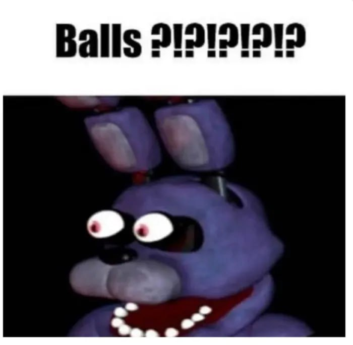

Ідея Five Nights at Freddyʼs виникла через негативну реакцію на попередню гру Скотта Коутона,
сімейну Chipper & Sons Lumber Co. Гравці казали, що головний герой (молодий бобер) виглядав як
страшна аніматроніка;, а рецензент Джим Стерлінг назвав гру ненавмисно жахливою.
Спочатку розчарований критикою, Коутон (який раніше розробляв переважно християнські ігри) врешті-решт
використав відгуки, щоб зробити щось навмисно страшнішим.
Five Nights at Freddy's була випущена на Desura 8 серпня 2014 року. 20 серпня, після
схвалення краудсорсингової платформи сервісу Greenlight, Five Nights at Freddy's також вийшла в
Steam. Коли гру підхопили відомі ютубери, вона стала інтернет-сенсацією.
Продовження вийшли 10 листопада 2014 року, 2 березня 2015 року, 23 липня 2015 року, 7 жовтня
2016 року, 4 грудня 2017 року, 27 червня 2018 року, 28 травня 2019 року, 25 листопада 2019 року та 16
грудня 2021 року відповідно. Спін-офф серії, FNaF World, був анонсований у повідомленні Cawthon у
Steam у вересні 2015 року і вийшов у січні 2016 року. Коутон публікує тизери до своїх ігор на своєму
веб-сайті та трейлери на своєму каналі YouTube.
Серія П'ять ночей у Фредді складається з відеоігор на тему жахів, в яких гравець зазвичай є нічним працівником у місці, пов'язаному з піцерією Фредді Фазбера, вигаданим дитячим рестораном, який надихається сімейними мережами піцерій, такими як Chuck E. Cheeses та ShowBiz Pizza Place. У ресторані є аніматроніки у натуральну величину, що нагадують антропоморфних тварин, які виступають на шоу-сцені, зазвичай на дитячих святах. Аніматроніки блукають рестораном вночі, а охороні доручено наглядати за ними. Для проходження гри гравець повинен захищатися від аніматроніків за допомогою різноманітних інструментів. Початкове пояснення рухливості аніматроніків полягає в тому, щоб запобігти блокуванню їхніх сервомоторів через відсутність використання; а їхня вбивча поведінка спричинена тим, що вони приймають людей за аніматронічних ендоскелетів, яких вони заштовхують всередину костюмів персонажів, вбиваючи їх у процесі цього. Однак, починаючи з третьої гри, заднім числом з'ясовується, що в аніматроніків насправді вселилися духи дітей, убитих співзасновником ресторану і головним антагоністом франшизи Вільямом Афтоном, який випадково вбив себе, коли перевдягнувся в аніматронічний костюм і активував його пружинні замки.
Золотий Фредді - це таємнича і схожа на привида істота, яка набуває вигляду жовтого аніматронічного ведмедя. Він відіграє важливу роль у серіалі Пять ночей у Фредді, хоча його походження загадкове і невідоме.
Five Nights at Freddy's (2014), Five Nights at Freddy's 2 (2014), Five Nights at Freddy's 3 (2015), Five Nights at Freddy's 4 (2015), Five Nights at Freddy's: Sister Location (2016), Freddy Fazbear's Pizzeria Simulator (2017), Five Nights at Freddy's: Help Wanted (2019), Five Nights at Freddy's: Security Breach (2021), Five Nights at Freddy's: Help Wanted 2 (2023)